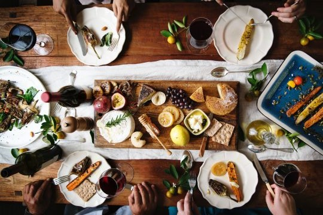
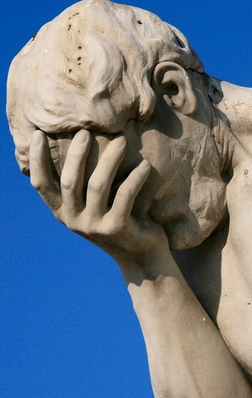
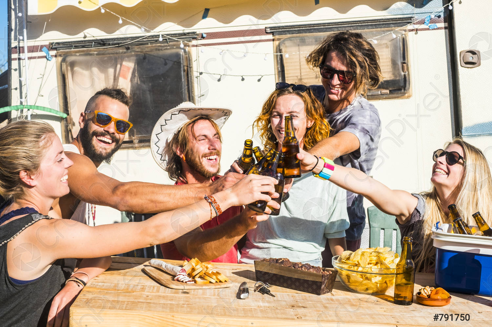

History
First of all, a little history and why it has become a tradition at all.
The organization of such event includes many nuances, so many people spend time either with their family or let themselves go with the flow.
For me, the organization was not always easy, but I always enjoyed it in spite of the money, time and effort spent.
This tradition does not last so long, but I made the decision to keep it.
On average, preparation always took a week, but this is taking into account the fact that the whole plan is already ready and all that remains is to implement it.
There were always a couple of friends who helped with everything. Shopping for groceries sometimes turned out to be the most difficult task, but it was easier and more fun thanks to those friends.
When that day comes, my head always stops working and I just start to go with the flow of what was prepared.
Then the time comes when all the people gather in one place, which turns into complete nonsense: someone does not know where and how to get there, someone asks a bunch of stupid questions, and then some kind of individual remains, which everyone else is waiting for.
Because of this, I began to take with me a bottle of something of an average strength of alcohol.
Well, then endless conversations begin about anything, disputes about playing music and responsibility for cooking barbecue.
In general, this is a rest that does not end until everyone turns off.
And in the end, it’s time to go.
It would seem that this can be done on any day, and what is the point of all these efforts, but these memories and emotions, it's worth it...